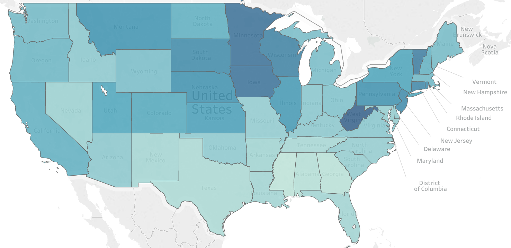
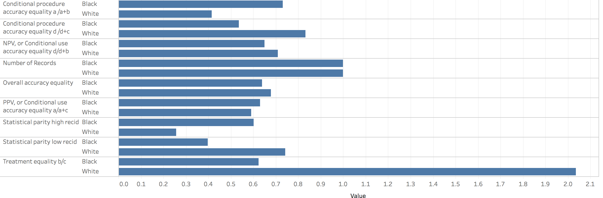
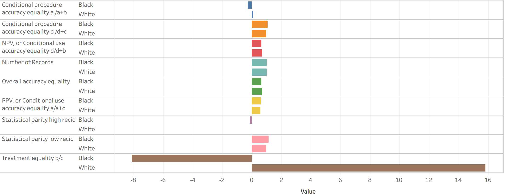

Rule by Algorithm has Arrived
and there are no laws or regulations to protect democracy.
We decided to take a look at one of these predictive algorithms, COMPAS,
to test its fairness for ourselves.

Various nonprofits, governments, and private companies have been attempting to create algorithms to make the system of setting bail and determining sentence length more impartial to race. Using machine learning, in which historical data is used to inform future decisions and predictions, these algorithms seek to reduce human bias by assigning criminal sentencing decisions to computers.
The Correctional Offender Management Profiling for Alternative Sanctions, or COMPAS, is one such risk assessment algorithm developed by Northpointe Inc., a private company.
Since the algorithm is the key to its business, Northpointe does not reveal the details of its code. However, multiple states use the algorithm for risk assessments to determine bail amounts and sentence lengths. Many worry that this risk assessment algorithm, and algorithms like it, has unfair effects on different groups, especially with regards to race.
COMPAS assigns defendants a score from 1 to 10 based on more than 100 variables, including age, sex and criminal history that indicates how likely they are to reoffend. Race, ostensibly, does not factor into the calculus. However, ProPublica found that the software assessed risk based on information like ZIP codes, educational attainment, and family history of incarceration, all of which can serve as proxies for race.

-->Are False Positives and False Negatives enough?
There are a few ways to define COMPAS’ success. One way is to look at its false positives rate—how many not risky people the algorithm incorrectly labeled as being at high risk for recidivism. Another way is to look at false negatives— how many risky people the algorithm missed. The metric that should be applied is context-based. Would the justice system rather falsely punish more innocent people because of a bad false positive rate, or would it rather let risky people roam free with a bad false negative rate?

At first glance, the COMPAS numbers seem fairly equal in terms of output of true positives. But there's more to the story.
Among defendants who did not reoffend, 42% of black defendants were classified as medium or high risk, compared to only 22% of white defendants. In other words, black people were more than twice as likely as whites to be classified as medium or high risk.

-->A Case Study
In April, the Wisconsin Supreme Court heard the case Loomis v. Wisconsin, a case centered around the legality of the COMPAS algorithm. Loomis, a registered sex offender, was given a six-year prison term for eluding the police after a judge told him he was categorized as “high risk” to the community. His appeal hinges on the fact that COMPAS is a proprietary black-box algorithm that in practice affects men and women differently - a real example of unfair rule by algorithm. The Loomis case has been petitioned to the Supreme Court and, if heard, could have important consequences for private algorithms in the public sphere.